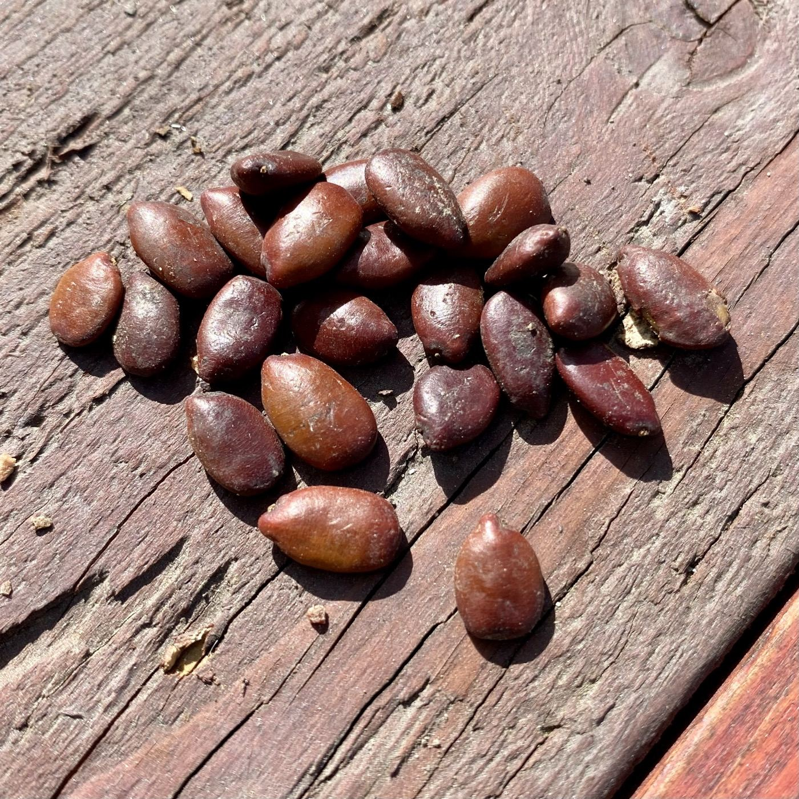

Kharoub
Graines de caroube
Source premium de gomme de caroube (E410), purifiée, triée, certifiée
Source premium de gomme de caroube (E410), purifiée, triée, certifiée
Extraites des gousses de caroube sélectionnées, nos graines sont nettoyées et triées optiquement pour atteindre une pureté maximale. Elles constituent la matière première idéale pour la production de gomme de caroube (E410), épaississant naturel largement utilisé dans l'industrie agroalimentaire, cosmétique et pharmaceutique.

Spécifications techniques
| Humidité | ≤ 12 % |
| Pureté | ≥ 99 % |
| Origine | Maroc |
| Traitement | Tri optique, nettoyage à sec |
Conditionnements
25 kg, 50 kg, Big Bag 1200 kg
Applications
Alimentaire
Production de gomme de caroube E410, épaississant et stabilisant naturel.
Cosmétique
Agent gélifiant et texturant pour crèmes, lotions et produits capillaires.
Pharma
Excipient naturel pour comprimés, gélules et suspensions pharmaceutiques.